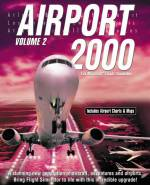

Airport 2000, Volume 2
von Wilco Publishing
getestet von Robin Breyl
Seit ich das erste mal Details über das neue
Add-On von Wilco Publishing, "Airport 2000,
Vol.2", gelesen habe, konnte ich es kaum
erwarten dieses auf meinem Rechner zu
installieren.
Ich muss gleich zu Anfang gestehen, dass meine
Aufregung sich eigentlich nicht allzu sehr auf
die sieben Flughäfen bezog, als vielmehr auf die
beigefügten Panels - doch der Reihe nach:
Produktumfang:
'"Airport 2000, Vol.2" beinhaltet in
erster Linie sieben detaillierte Flughafen
Szenerien für den Microsoft Flugsimulator in den
Versionen FS2000 und FS98. Diese sind:
- London Heathrow
- Barcelona
- Nizza
- Amsterdam Schiphol
- Boston, Logan International
- Miami International
- Chicago O'Hare
 Zusätzlich werden sechs teilweise sehr aufwändige
Panels mitgeliefert, zu denen auch jeweils ein
oder mehrere Flugzeugmodelle installiert werden:
Zusätzlich werden sechs teilweise sehr aufwändige
Panels mitgeliefert, zu denen auch jeweils ein
oder mehrere Flugzeugmodelle installiert werden:
- Boeing 767
- Boeing 737-300/400/500
- Airbus 320
- MD-83
- Avro RJ100
- King Air 350 Business
Zehn Adventures verbinden die Flugzeuge mit
den Flughäfen:
- Chicago O'Hare -> Boston Logan (A320)
- Miami Int. -> Chicago O'Hare (MD-83)
- Boston Logan -> Miami Int. (B767-200)
- London Heathrow -> Amsterdam Schiphol
(RJ100)
- Amsterdam Schiphol -> Barcelona
(B737-300)
- Barcelona -> Nizza (King Air 350)
- Nizza -> London Heathrow (B767-200)
- Brüssel -> Barcelona (B737-300)
- Frankfurt/Main -> London Heathrow (King
Air 350)
- Atlanta Heartsfield -> Miami Int.
(B737-300)
 Die letzten drei Adventures verknüpfen dabei
Flughäfen aus den Vorgänger Produkt
"Airport 2000, Vol.1" mit denen des
Volume 2. Man kann sie jedoch auch mit der
Standardszenerie des FS2000/FS98 spielen - nur
halt nicht so schön.
Die letzten drei Adventures verknüpfen dabei
Flughäfen aus den Vorgänger Produkt
"Airport 2000, Vol.1" mit denen des
Volume 2. Man kann sie jedoch auch mit der
Standardszenerie des FS2000/FS98 spielen - nur
halt nicht so schön.
Das ganze wird ergänzt durch eine etwa
70-seitige Dokumentation mit Flughafenkarten,
einigen SID- und STAR-Karten und
Kurzbeschreibungen der einzelnen Panels.
Für den Vorgänger "Airport 2000,
Vol.1" befindet sich auf der CD ein Patch,
der Volume 1 voll FS2000 kompatibel macht.
Der Hersteller Wilco Publishing gibt auf der Verpackung
als Mindestausstattung für den Betrieb dieses
Produktes folgende Konfiguration vor:
Windows 95/98, Pentium 200Mhz, 32 MB Ram
Empfohlen wird jedoch eine 3D-Beschleuniger
Karte und 64MB Ram.
 Test, Flughäfen:
Test, Flughäfen:
Leider kenne ich keinen der Flughäfen von
Airport 2000 Volume 2 so gut, daß ich mir hier
ein Urteil über den Realismus der Gebäudepositionen
oder der Texturen erlauben könnte.
Die Flughäfen bestechen durch eine große
Anzahl von individuell texturierten Gebäuden.
Unterschiedliche Tag- und Nachttexturen sorgen für
stimmungsvolle Bilder zu jeder Tageszeit. Eine
Menge Details runden das Bild ab. So steht in
einigen der Passenger-Gangways in London Heathrow
jemand vom Bodenpersonal bereit, um die Fluggastbrücke
an den Flieger anzudocken. An vielen dieser
Gangways sind detaillierte 3D-Modell Treppenauf-
und Abgänge modelliert.
 Auf jedem der Flughäfen gibt es Gebäude durch
deren Glasswände man auf die im Inneren
wartenden Passagiere blicken kann. Wer mit der
Schnellverstellung eine Reise durch diese Gebäude
unternimmt stößt mitunter sogar auf
Zeitungskioske und Abfertigungsschalter, die im
Inneren der Terminals verborgen sind. Ob ich mir
das jedoch zur regelmäßigen Angewohnheit mache,
wage ich noch zu bezweifeln... :-)
Auf jedem der Flughäfen gibt es Gebäude durch
deren Glasswände man auf die im Inneren
wartenden Passagiere blicken kann. Wer mit der
Schnellverstellung eine Reise durch diese Gebäude
unternimmt stößt mitunter sogar auf
Zeitungskioske und Abfertigungsschalter, die im
Inneren der Terminals verborgen sind. Ob ich mir
das jedoch zur regelmäßigen Angewohnheit mache,
wage ich noch zu bezweifeln... :-)
In Heathrow und Barcelona habe ich an einigen
Dockingposition auch eine Dockingsystem entdeckt
(wird nicht im Handbuch erwähnt), welches dem
Flugzeugführer das Einparken erleichtern
soll. Allerdings ist es nicht frontal vor dem
Flieger angebracht, sondern seitwärts an der
Fluggastbrücke. Auch wirkt es weder so
funktional noch so professionell, wie die
Dockingsysteme, die man in den German
"Airports" an vielen Stellen finden
kann.
 Markante
Gebäude, wie das Hilton-Hotel inmitten des
Chicagoer O'Hare Flughafens sind ebenso zu
finden, wie kleine Details, die sich zum Beispiel
in gefüllten Parkplätzen (keine Auto-Objekte,
nur 2D-Texturen) wiederspiegeln. Das Flugfeld in
Nizza ist von Palmen gesäumt und auf dem Vorfeld
steht etwas, was mir wie eine alte DC-4
ausschaut, auf der man sogar einen aufgemalten Willkommensgruß
lesen kann.
Markante
Gebäude, wie das Hilton-Hotel inmitten des
Chicagoer O'Hare Flughafens sind ebenso zu
finden, wie kleine Details, die sich zum Beispiel
in gefüllten Parkplätzen (keine Auto-Objekte,
nur 2D-Texturen) wiederspiegeln. Das Flugfeld in
Nizza ist von Palmen gesäumt und auf dem Vorfeld
steht etwas, was mir wie eine alte DC-4
ausschaut, auf der man sogar einen aufgemalten Willkommensgruß
lesen kann.
 In Miami entdecke ich beim Rollen einen
animierten Zug, der offenbar verschiedene
Terminals miteinander verbindet, ähnlich dem Sky-Train
am Frankfurter Flughafen. Boston beeindruckt
durch die im Hintergrund liegende Skyline der
Stadt und den architektonisch recht ungewöhnlichen
Tower.
In Miami entdecke ich beim Rollen einen
animierten Zug, der offenbar verschiedene
Terminals miteinander verbindet, ähnlich dem Sky-Train
am Frankfurter Flughafen. Boston beeindruckt
durch die im Hintergrund liegende Skyline der
Stadt und den architektonisch recht ungewöhnlichen
Tower.
Auf jedem Flughafen findet man eine Hand
voll texturierter, statischer Flugzeuge
regionaler Airlines vor. Zusätzlich bewegen sich
einige,  ebenfalls
texturierte, dynamische Flugzeuge, die starten,
landen und von, bzw. zum Gate rollen. Diese
nehmen keinerlei Rücksicht auf eventuell gerade
im Landeanflug einschwebende Flugsimulationsfans
- also bereitet Euch gegebenenfalls auf einen
Go-Around vor.
ebenfalls
texturierte, dynamische Flugzeuge, die starten,
landen und von, bzw. zum Gate rollen. Diese
nehmen keinerlei Rücksicht auf eventuell gerade
im Landeanflug einschwebende Flugsimulationsfans
- also bereitet Euch gegebenenfalls auf einen
Go-Around vor.
Bei Nacht werden alle Flughäfen hübsch
beleuchtet. Auch die statischen
Flugzeuge weisen nach dem neuesten Stand der
Technik beleuchteten Logos und teilweise
beleuchtete Fenster auf - nur der eigene Flieger
erscheint nachtschwarz und, abgesehen von den
Landescheinwerfern, unbeleuchtet.
 Leider zeigen die Flughäfen alle eine recht
deutlichen Einfluss auf die Performance vom
FS2000. Auf meinem P3/500 (256MB Ram,
Voodoo3/3000) bekomme ich so eben noch 10 Bilder
pro Sekunde bei schönem Wetter zusammen. Sind
Wolken am Himmel, oder bricht gar die
Dämmerung an, geht die Framerate auch schon mal
gerne in den Bereich von fünf bis hinab zu einem
Bild pro Sekunde runter. Das ist dann im
Landeanflug schlichtweg nicht mehr spielbar. Hier
hilft nur die Szeneriedichte radikal runterdrehen
(Schatten habe ich ohnehin deaktiviert). Leider
trübt das natürlich den Anblick der
detaillierten Flughäfen.
Leider zeigen die Flughäfen alle eine recht
deutlichen Einfluss auf die Performance vom
FS2000. Auf meinem P3/500 (256MB Ram,
Voodoo3/3000) bekomme ich so eben noch 10 Bilder
pro Sekunde bei schönem Wetter zusammen. Sind
Wolken am Himmel, oder bricht gar die
Dämmerung an, geht die Framerate auch schon mal
gerne in den Bereich von fünf bis hinab zu einem
Bild pro Sekunde runter. Das ist dann im
Landeanflug schlichtweg nicht mehr spielbar. Hier
hilft nur die Szeneriedichte radikal runterdrehen
(Schatten habe ich ohnehin deaktiviert). Leider
trübt das natürlich den Anblick der
detaillierten Flughäfen.
 Test, Panels und Flugzeuge:
Test, Panels und Flugzeuge:
Wie schon erwähnt, sind die Panels für mich
bei Airport 2000 Volume 2 die eigentlichen
Highlights. Wilco Publishing ist es gelungen
Ralph Tofflemire als Paneldesigner für dieses
Projekt zu gewinnen. Ralph hat in der
Vergangenheit schon einige äußerst
bemerkenswerte Panels für den FS98 entwickelt,
die in meinen Augen zu den allerbesten gehören,
die es je für den FS98 gegeben hat. Seine Panels
hat er bisher im Internet auf seiner Homepage
angeboten, oder sie bei der Firma AETI veröffentlicht.
 Sicherlich sind photorealistische Panels nicht
jedermanns Geschmack. Der Photorealismus geht
teilweise etwas zu Lasten der Lesbarkeit und
vielleicht auch der Übersichtlichkeit. Wer
jedoch den FS2000/FS98 in Auflösungen von
1024x768 oder besser 1280x1024 betreiben kann und
nichts generell gegen photorealistische Panels
einzuwenden hat, der sollte hier unbedingt mal
ein Auge drauf werfen.
Sicherlich sind photorealistische Panels nicht
jedermanns Geschmack. Der Photorealismus geht
teilweise etwas zu Lasten der Lesbarkeit und
vielleicht auch der Übersichtlichkeit. Wer
jedoch den FS2000/FS98 in Auflösungen von
1024x768 oder besser 1280x1024 betreiben kann und
nichts generell gegen photorealistische Panels
einzuwenden hat, der sollte hier unbedingt mal
ein Auge drauf werfen.
Als ich mit diesem Testbericht began, habe ich
Ralph Tofflemire ein paar Fragen zu den Panels
per eMail geschickt. Daraus hat sich ein recht
umfangreiches Interview ergeben, dass ich
auf der folgenden
Seite diesem Testbericht beigefügt habe.
Leider erwecken die Worte des Autors, als auch
die tatsächliche programmtechnische Umsetzung
den Eindruck, dass Wilco hier in erster Linie ein
Szenerieprodukt verkaufen möchte und nebenbei
noch ein paar interessante Panels mit dazugibt.
Das eigentliche Potential, dass in diesen Panels
steckt, wurde leider übersehen und nicht
ausgeschöpft.
Dennoch erscheinen mir die Panels, auch in
Ihrer teilweise etwas abgespeckten Version, noch
immer ein absoluter Leckerbissen für jeden Fan
von aufwendigen Cockpits zu sein. Ohne hier jedes
Panel im Detail durchzusprechen, möchte ich nur
ein paar der Highlights meiner drei Favoriten
(737, MD-83, und King Air) erwähnen. Die übrigen
Panels sind nicht photorealistisch und wirken
eher gewöhnlich.
 Neben
der realistischen Anordnung der Instrumente hat
Ralph eine ganze Reihe technischer Zusätze in
diese Panels programmiert. So sind sie mit einem
virtuellen Copiloten ausgestattet, der beim
Anrollen auf der Startbahn die üblichen Calls
"Airspeed alive", "80 knots",
"v1, rotate, v2" ausruft. Die 737 hat
ein eigenes Panel, in dem gesprochene Checklisten
abgerufen werden können. Der Spieler wählt
einfach z.B. die "After Start
Checklist" aus und bekommt dann den
entsprechenden Cockpit-Dialog vorgesprochen.
Neben
der realistischen Anordnung der Instrumente hat
Ralph eine ganze Reihe technischer Zusätze in
diese Panels programmiert. So sind sie mit einem
virtuellen Copiloten ausgestattet, der beim
Anrollen auf der Startbahn die üblichen Calls
"Airspeed alive", "80 knots",
"v1, rotate, v2" ausruft. Die 737 hat
ein eigenes Panel, in dem gesprochene Checklisten
abgerufen werden können. Der Spieler wählt
einfach z.B. die "After Start
Checklist" aus und bekommt dann den
entsprechenden Cockpit-Dialog vorgesprochen.
 Durch
die recht aufwendigen Overheadpanels der Boeing
737 und der MD-83 lassen sich realistische
Start-Up Prozeduren nachbilden. So muss zunächst
die APU gestartet, Treibstoffpumpen
eingeschaltet, die Klimaanlage aktiviert und die
Kabine mit Strom versorgt werden. Erst danach
sollten in der 737 die Triebwerke angelassen
werden. Das 737 Panel hat hier noch ein
besonderes Highlight, in Form von mehr oder
minder zufällig auftretenden Triebwerksausfällen.
Schiebt man beim Start den Schubhebel zu schnell
zu weit nach vorne, so ergibt sich eine Chance, dass
während des Take-Offs eines der beiden
Triebwerke seinen Geist aufgibt. Dies macht sich erwartungsgemäß
mit einem unangenehmen Geräusch und einer sehr
starken Gier-Bewegung zur Seite bemerkbar. Je
nach Zeitpunkt muß man in Sekunden entscheiden,
ob man den Start noch abbricht, oder mit einem
Triebwerk eine Platzrunde probiert.
Durch
die recht aufwendigen Overheadpanels der Boeing
737 und der MD-83 lassen sich realistische
Start-Up Prozeduren nachbilden. So muss zunächst
die APU gestartet, Treibstoffpumpen
eingeschaltet, die Klimaanlage aktiviert und die
Kabine mit Strom versorgt werden. Erst danach
sollten in der 737 die Triebwerke angelassen
werden. Das 737 Panel hat hier noch ein
besonderes Highlight, in Form von mehr oder
minder zufällig auftretenden Triebwerksausfällen.
Schiebt man beim Start den Schubhebel zu schnell
zu weit nach vorne, so ergibt sich eine Chance, dass
während des Take-Offs eines der beiden
Triebwerke seinen Geist aufgibt. Dies macht sich erwartungsgemäß
mit einem unangenehmen Geräusch und einer sehr
starken Gier-Bewegung zur Seite bemerkbar. Je
nach Zeitpunkt muß man in Sekunden entscheiden,
ob man den Start noch abbricht, oder mit einem
Triebwerk eine Platzrunde probiert.
 Ein
weiterer Fehlerfall, der im 737 Panel integriert
ist, macht sich erst bei der Landung bemerkbar.
Ist die Sinkrate zu hoch, so kann mit einer
gewissen Wahrscheinlichkeit ein Reifen platzen,
was wiederum zu dem unangenehmen Geräusch und
den damit verbundenen Folgen führt.
Ein
weiterer Fehlerfall, der im 737 Panel integriert
ist, macht sich erst bei der Landung bemerkbar.
Ist die Sinkrate zu hoch, so kann mit einer
gewissen Wahrscheinlichkeit ein Reifen platzen,
was wiederum zu dem unangenehmen Geräusch und
den damit verbundenen Folgen führt.
 Das MD-83 Panel wirkt mit seiner Vielzahl an
analogen Instrumenten noch überfüllter als das
737-Panel. Dafür ist das Overhead-Panel überschaubarer.
Beide Panels hatten in Ihrer ursprünglichen Form
noch eingebaute Fehlerfälle, die zu einem
Triebwerksbrand während des Fluges führen
konnten. Zu diesem Zweck finden sich noch die
Feuerlöschschalter in den Cockpits. Leider musste
diese Funktion aus Gründen der Kompatibilität für
Airport 2000 Vol.2 wieder entfernt werden. Dafü
besitzt das MD-83 Panel ebenso wie die 737 eine
"Pushback" Feld, mit dem man sein
Flugzeug beim Start vom Gate zurückschieben
lassen kann. Nach der Eingabe einer Zeitspanne
(z.B. 20 Sekunden) und einer gewünschten
Drehrichtung beginnt ein gesprochener Dialog
zwischen dem Captain und der Bodencrew, in deren
Verlauf das Flugzeug aus der Parkposition
herausgeschoben wird.
Das MD-83 Panel wirkt mit seiner Vielzahl an
analogen Instrumenten noch überfüllter als das
737-Panel. Dafür ist das Overhead-Panel überschaubarer.
Beide Panels hatten in Ihrer ursprünglichen Form
noch eingebaute Fehlerfälle, die zu einem
Triebwerksbrand während des Fluges führen
konnten. Zu diesem Zweck finden sich noch die
Feuerlöschschalter in den Cockpits. Leider musste
diese Funktion aus Gründen der Kompatibilität für
Airport 2000 Vol.2 wieder entfernt werden. Dafü
besitzt das MD-83 Panel ebenso wie die 737 eine
"Pushback" Feld, mit dem man sein
Flugzeug beim Start vom Gate zurückschieben
lassen kann. Nach der Eingabe einer Zeitspanne
(z.B. 20 Sekunden) und einer gewünschten
Drehrichtung beginnt ein gesprochener Dialog
zwischen dem Captain und der Bodencrew, in deren
Verlauf das Flugzeug aus der Parkposition
herausgeschoben wird.
 Die
zweimotorige King Air hat ebenfalls ein sehr
detailliertes Panel. Hier findet sich sogar ein
Wetter-Radar, das jedoch nur eine Attrappe ist
und nichts mit dem realen (simulierten)
Wettergeschehen zu tun hat. Ansonsten ist dieses
Panel selbst für meine Augen etwas zu
unleserlich, aber für kurze Rundflüge nutze ich
es dennoch gerne mal.
Die
zweimotorige King Air hat ebenfalls ein sehr
detailliertes Panel. Hier findet sich sogar ein
Wetter-Radar, das jedoch nur eine Attrappe ist
und nichts mit dem realen (simulierten)
Wettergeschehen zu tun hat. Ansonsten ist dieses
Panel selbst für meine Augen etwas zu
unleserlich, aber für kurze Rundflüge nutze ich
es dennoch gerne mal.
Für alle diese Panels ist die Dokumentation,
die Wilco im Handbuch abgedruckt hat keinesfalls
ausreichend. Stattdessen finden sich auf der CD
etwas umfangreichere Manuals im PDF-Format. Doch
auch diese hätten nach meinem Dafürhalten
deutlich detaillierter ausfallen können.
Die mitgelieferten Flugzeuge bedürfen
eigentlich keiner weiteren Besprechung. Es
handelt sich ausnahmslos um konvertierte FS98
Flugzeuge mit den klassischen 8-seitigen Rümpfen.
Diese sind teilweise um durchsichtige
Cockpitfenster und rotierende Triebwerksschaufeln
ergänzt worden. Einige Teile sind animiert,
jedoch nicht alle. So habe ich zu Beispiel
bewegliche Ailerons, jedoch starre Seitenruder
gesehen...
Die Texturen sind soweit etwa Stand der Technik,
allerdings gibt es an keinem der Flugzeuge
Nachteffekte, wie ein beleuchtetes Logo am
Seitenruder oder helle Kabinenfenster. Beschrifte
Reifen (Goodyear) beeindrucken mich auch nicht
mehr besonders. Ich denke, hier kann man bei
Bedarf sicherlich mit besseren Freeware-Modellen
aus dem Internet seine persöhnlichen
Lieblingsflugzeuge einbauen.
 Test, Adventures:
Test, Adventures:
Wilco setzt bei den Adventures auf herkömmliche
Technologien. Grundsätzlich unterscheiden sich
die Adventures in der Bedienung nicht von
Adventures, die man selbst mit irgendeinem
Adventuregenerator erzeugt hat. Allerdings hat
Wilco ein paar Sondertastenkombinationen eingefügt
(z.B. " SHIFT S" für die No-Smoking
Signs) und ein paar andere umdefiniert (z.B.
"CTRL O" zum bestätigen von
empfangenen Funkmeldungen). Ärgerlich ist das für
mich zum Beispiel mit "SHIFT S", da
diese Tastenkombination normalerweise umgekehrt
zu "S" durch die verschiednen Ansichten
(innen, aussen, Tower) schaltet und ich sie
eigentlich recht oft benutze, um vom Cockpit aus
direkt zur Außenansicht zu gelangen.
 Die Adventure selbst sind recht einfach
gehaltene, solide Airline-Flüge. Man wird von
verschiedenen Sprechern vom Abflughafen
wegdirigiert und irgendwann an die eigene
Navigation übergeben. Dann folgt man seinem
(vorgegebenen) Flugplan und wird am Zielflughafen
sicher zu einer Landebahn gesprochen. Es
gibt keine aufregenden Zwischenfälle (zumindest
bei den Adventures, die ich getestet habe), keine
Directs, die einen vom vorgeplanten
Flugplan abbringen könnten und auch keine
Holdings. Eingeschränkt sind auch die Möglichkeiten
des Piloten, da man keine Flughöhenänderungen
erbitten oder beim Landeanflug einen Go-Around
ankündigen kann. Macht man jedoch in der
korrekten Reihenfolge und zum richtigen Zeitpunkt
die "No-Smoking signs" und "Fasten
seatbelts" an, bzw. aus, so wird man mit
Ansagen der Kabinencrew an die Passagiere belohnt
- nur Kaffe kommt keiner :-(.
Die Adventure selbst sind recht einfach
gehaltene, solide Airline-Flüge. Man wird von
verschiedenen Sprechern vom Abflughafen
wegdirigiert und irgendwann an die eigene
Navigation übergeben. Dann folgt man seinem
(vorgegebenen) Flugplan und wird am Zielflughafen
sicher zu einer Landebahn gesprochen. Es
gibt keine aufregenden Zwischenfälle (zumindest
bei den Adventures, die ich getestet habe), keine
Directs, die einen vom vorgeplanten
Flugplan abbringen könnten und auch keine
Holdings. Eingeschränkt sind auch die Möglichkeiten
des Piloten, da man keine Flughöhenänderungen
erbitten oder beim Landeanflug einen Go-Around
ankündigen kann. Macht man jedoch in der
korrekten Reihenfolge und zum richtigen Zeitpunkt
die "No-Smoking signs" und "Fasten
seatbelts" an, bzw. aus, so wird man mit
Ansagen der Kabinencrew an die Passagiere belohnt
- nur Kaffe kommt keiner :-(.
Insgesamt bekommt man klassische
ATC-Adventures, die gerade für den Einsteiger in
diese Thematik sehr reizvoll sein könnten.
Noch dazu ist die Handhabung der Adventures
gut in dem ansonsten eher dürftigen Handbuch
beschrieben.
Fazit:
Ich denke, hier ist Wilco Publishing ein
recht abgerundetes Zusatzprodukt für den
Microsoft Flugsimulator gelungen. Wer in die
Verkehrsfliegerei hineinschnuppern möchte und
sich nur ein einziges Zusatzprogramm zulegen
will, der ist mit "Airport 2000, Vol.
2" sicherlich nicht schlecht bedient. Eine
Reihe interessanter Flugplätze, aufwendige
Panels und ein paar Adventures ergänzen den MS
Flugsimulator sehr gut. Wer noch dazu die erste
Version Volume 1 sein eigen nennt, kann sowohl
innerhalb Europas, als auch in Amerika
verschiedene Linienflüge simulieren und kann
sicherlich eine Menge Spaß daran haben.
Die Szenerien, die ja eigentlich dass
Hauptprodukt darstellen sind ordentlich gemacht.
Individuelle Gebäudetexturen mit Nachteffekten
geben jedem der Airport ein eigenes Flair.
Sicherlich sind Mega-Hubs, wie Chicago oder
Amsterdam noch nicht auf jedem Rechner in der höchsten
Detailstufe spielbar. Vergleichbar niedrige
Framerates habe ich jedoch auch schon bei den
Umsetzungen von Amsterdam Schiphol von anderen
Herstellern gesehen. Hier muss wohl noch etwas
Zeit und CPU-Entwicklung ins Land gehen, bevor
man eine solche Detailvielfalt flüssig
darstellen kann.
Die Qualität der Texturen reicht nicht immer
an die German Airports 3 für den FS2000 heran.
Stellenweise sehen sie mir recht bunt aus - aber
ich kenne halt die Originale nicht und kann mir
da kein abschließendes Urteil erlauben. Die
3D-Modelle sind jedoch sehr detailliert und auch
die Glasseffekte mit den sichtbaren Räumen im
Inneren der Terminals können den Blick des
Betrachters einfangen.
Rundrum also ein gelungen Produkt, das
sicherlich einen Daumen nach oben verdient hat.
Dennoch denke ich, dass Wilco hier eine Chance
auf ein noch sehr viel besseres Produkt
verschenkt hat. Wer einmal in Amsterdam nach dem outer
Taxiway sucht, wird sich über die schlecht
gedruckten Airport-Diagramme ärgern. Wer
versucht, eine komplette Start-Up Prozedur am
photorealistischen Overhead-Panel der Boeing 737
hinzubekommen, scheitert an der lückenhaften
Dokumentation und wird doch wieder auf "CTRL
E" zurückgreifen.
Ich vermute, dass hier die berühmte "Time
to market" Floskel einen frühen
Auslieferungszeitpunkt diktiert hat. Hätte man
z.B. auf das Panel SDK von Microsoft gewartet, hätten
viele der Features, die aus den MD-83 und 737
Panels entfernt werden mussten, vielleicht doch
noch ihren Weg in die FS-2000 Version gefunden.
Wilco hat mit den Panels von Ralph Tofflemire
absolute Highlights auf ihrem Gebiet an der Hand
gehabt. Ich kenne keine Panels, die für den FS98
vergleichbar gewesen wären. Und eben diese
Panels müssen nun ein Dasein als abgespeckte und
kostenlose Beilage zu einer Szenerie
fristen.
Da kann ich nur hoffen, dass Ralph uns noch
viele, qualitativ hochwertige Panels als eigenständige
Produkte verkaufen kann, und dass Wilco
Publishing sich darauf konzentriert hochwertige
Szenerien zu entwickeln und als kostenlose
Beilagen zukünftig lieber auf hochwertiges
Kartenmaterial umsteigt.
Robin Breyl
robin@breyl.de
13. April 2000


{kind=link}